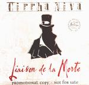

| Artist: | Cirrha Niva |
| Title: | Liaison De La Morte |
| Label: | Parnassus/Suburban |
| Length(s): | 52 minutes |
| Year(s) of release: | 2001 |
| Month of review: | [01/2001] |
| 1) | October 31st | 2.55 |
| 2) | Nightwish | 8.05 |
| 3) | Le Parade | 7.58 |
| 4) | Nostalgia | 10.45 |
| 5) | Mélancolique | 9.52 |
| 6) | Echoes | 7.48 |
| 7) | The Beginning Of... | 4.24 |
Ought there to be a relation between the title of this track and the now rather popular Finnish band. Don't think so. The song starts with slow evolving guitar, and more guitars join in along the way. The music sounds rather plodding, the vocals are slow and have an angriness to them. The drums are heavy and played percussively. The music is tense and foreboding and I like it a lot. The first part reminded me a bit of Pink Floyd, but later one thinks sooner of Led Zeppelins Kashmir, but taken into the nineties. Very strong. The music is not plain progmetal however, because the band also introduces carnival music into their music. The music does continue to be guitar dominated, but for the most part the melodic are good and insinuate a good kind of tension, and supported by appealing rather loose drums. After six minutes or so the song moves into higher gear as the rhythm guitar sets in, with the solo guitaring ehm soloing right over it. The song ends in bombastic fashion.
The next track opens rather quietly with a waltzy tune played in somewhat classical style. The piano takes the fore here on this very melodic passage. What is strange is that the lyrics to this song contain the words Nightwish, the title of the previous track. Anyway, the song soon becomes a bit louder, heavier with the ''French'' vocals of Hegt (I guess) singing in a rather extraverted fashion. In contrast the vocals of Kloek are sinister, often low and subdued, but sometimes rising, and always full of drama. The drama is a like in an opera: a bit overdone. He has a bit of an accent, but it is not disturbing. There is plenty of variation here, but the feeling that remains is that of a song which is often quite playful, notwithstanding the thoughtful piano and the jazzy excursions right after the middle. The song ends in crescendo with a wailing electric guitar and a grinding rhythm guitar.
Nostalgia is the fourth and longest part of the seven. It is also one for which the band recorded a long video clip. This is a very dynamic progmetal song with plenty of bombasm and varied vocals to accompany Kloek's loud lead. His vocal style is reminiscent of the style of ex-Egdon Heath Maurits Kalsbeek. In the instrumental intermezzo the music becomes quite manic with ELPish keyboards and the guitars making sure the tension in the music is preserved. Between these tense and active parts, the music sometimes takes some gas back, in this case for a vocal part of Hegt whose vocals sometimes approach those of Lene Lovich. At the end the band interjects some vocal influences (they really try to live-up to their cross genre approach after the jazzy excursions of the previous track). The staccato guitar work at the end is really great. We transit into Mélancolique by means of a cinematic part. This almost ten minute track is even more varied than the previous, but it is also definitely less heavier. It does feature a strongly percussive part which moves right into a somewhat world music like soothing chanting. The music picks up a little bit and we arrive at a passage with throaty vocals (think Tibetan monks here) and melodic piano, building up slowly introducing some atmospheric guitar playing. The drums set in as well, as the song winds down to its climactic conclusion with a hair raising combination vocals. Spooky.
Now over to Echoes, where the rhythm guitar and drums reign. Again the bombasm of the music and the heavy lightfootedness (this is no contradiction in terms). The song itself does not bring us anything that we have not yet heard, but I have to say that in this song the vocals melody is a strong one, emotional too, to be followed by a guitar solo that continues the emotional trend. The conclusion to the track introduces synth strings for a bit of extra bombast.
The Beginning Of... concludes the album and opens with the accordeon of the first track. In fact, this song can be construed as summarizing of the album.